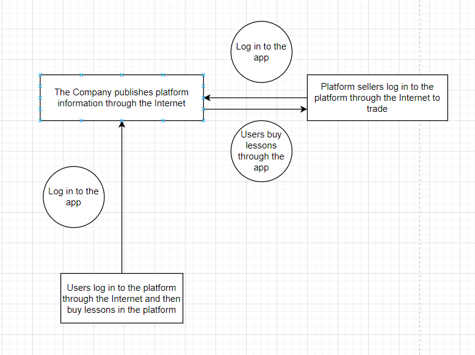
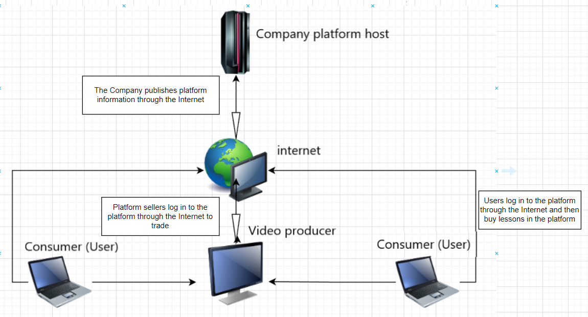

Online webinars
A platform with a large number of course sales users is needed, and the sales users hang their recorded courses on the platform for sale. All users will be protected by the property within the software of the platform
The company draws commissions by providing a platform, and the company's goal is to raise people's copyright awareness and maintain the copyright of creators while making a profit. In the early days of the company need to provide a free communication platform to attract the number of users of the platform, and can also subsidize creators to attract more creators. After having a large number of users and creators, you can make a profit by taking a commission


We need HPE ProLiant DL360 Gen10 Plus server and Microsoft SQL server
Questionnaire
| Jeason(XiaZhengwei) |
Jacky(WangYanzhi) |
| Name this system? |
Short books |
Online Academy |
What are the system objectives? |
Users can buy courses that are listed on the platform |
Sellers list courses on the platform app |
| List 3 essential system features and components? |
Online learning, online question and answer, topic database |
Online learning, watching recorded courses at any time, topic database |
| List 3 essential hardware from this system. |
Motherboard, Graphics Card, CPU |
Hard disk, monitor, memory stick |
| List 3 essential software from this system. |
COBOL、PASCALLOGO、C |
BASIC、FORTRAN、PASCAL |
| List 2 external system components. |
Memory management, Database |
Process management, Database |
| List 2 system benefits |
Not subject to temporal space conditions |
Convenient and fast, with a wide range of learning programs to choose from |
| List 2 project difficulties: |
The user base is growing slowly |
Video copyright issues are serious |